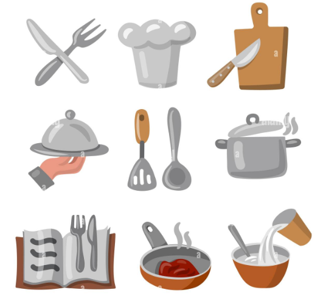

Historia de um café
Localizada no coração da cidade a barbearia Luis traz para o mercado o que há de melhor para o seu cabelo e barba. Fundada em 2019, a Barbearia luis já é destaque na cidade e conquista novos clientes a cada dia.
Nossa missão é: "Proporcionar auto-estima e qualidade de vida aos clientes".
Oferecemos profissionais experientes e antenados às mudanças no mundo da moda. O atendimento possui padrão de excelência e agilidade, garantindo qualidade e satisfação dos nossos clientes.
Ingredientes
- 1 xícara (chá) de farinha de trigo (120 g)
- 1/3 de xícara (chá) de açúcar (50 g)
- 1 colher (chá) de fermento em pó
- 2 pitadas de sal
- 25 g de manteiga derretida
- 1/2 xícara (chá) de leite (120 ml)
- 1/2 xícara (chá) de café coado em temperatura ambiente (120 ml)
- 2 ovos
- Óleo vegetal pra fritar
Preparaçao
Numa tigela média, misture com um batedor a farinha, o açúcar, o fermento e o sal, reserve. Junte a manteiga o leite, o café, os ovos e mexa até conseguir uma massa homogênea. Aqueça uma frigideira média, junte um fiozinho de óleo e espalhe bem. Despeje 1 concha pequena ou mais ou menos 1/3 de concha grande (das de sopa) no centro da frigideira e deixe que ela se espalhe naturalmente, sem se importar com a perfeição do disco. Mantendo o fogo médio, pois se for alto as panquecas douram demais por fora e continuam cruas por dentro. Quando aparecerem umas bolhinhas na parte de cima da panqueca e a borda começar a dourar, vire a panqueca pra dourar do outro lado por uns 30s. Com uma espátula, transfira a panqueca pronta pra um prato e frite as demais (se a frigideira for realmente anti-aderente ou de ferro já bem curada, provavelmente nem será preciso acrescentar mais óleo entre uma panqueca e outra). Sirva em seguida com manteiga, requeijão, nata, mel, melaço de cana, ricota fresca cremosa ou com manteiga de café.
